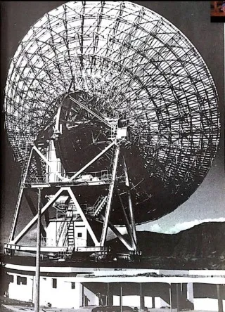
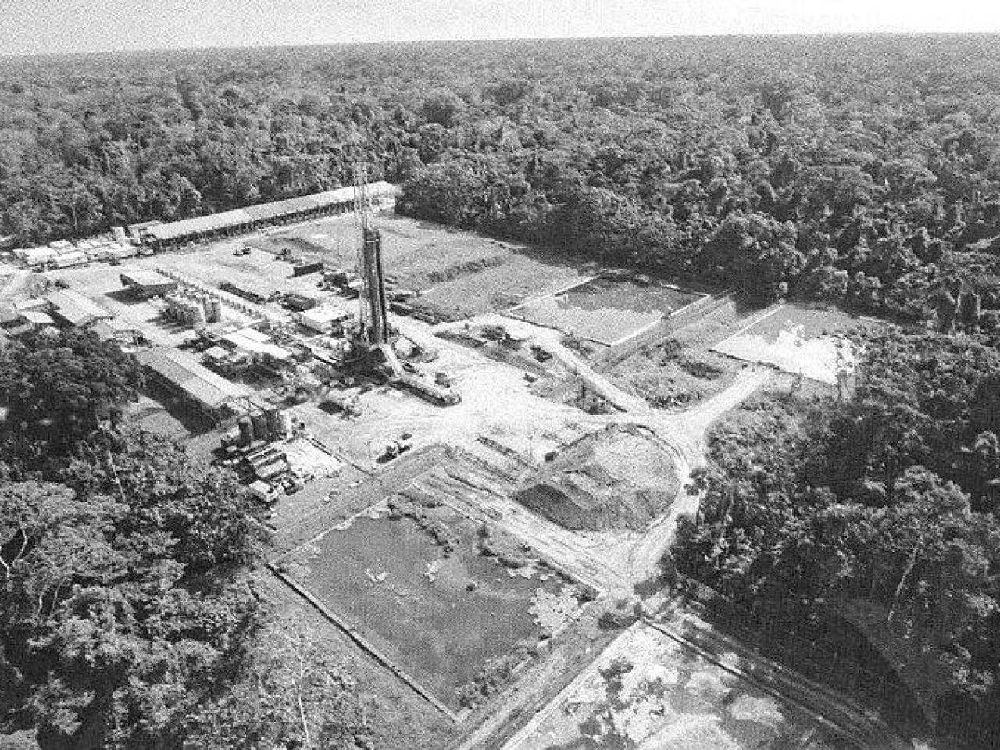
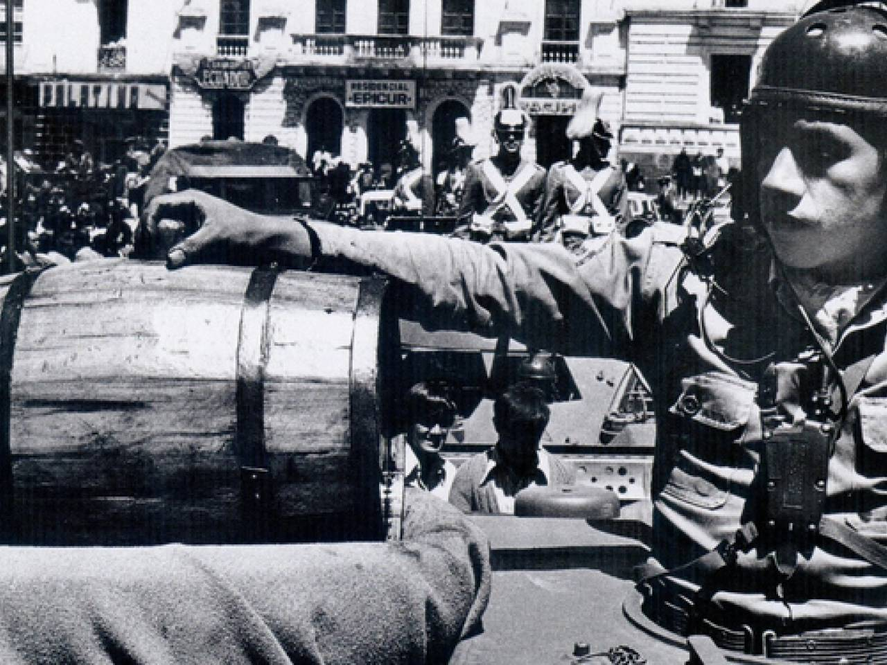
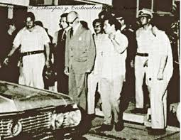

El salto a la era satelital y petrolera
El año 1972 representó un punto de transformación en la historia del Ecuador, caracterizado por avances tecnológicos en telecomunicaciones, cambios políticos y el inicio del auge petrolero que redefinió la economía nacional.
En 1972, el Estado ecuatoriano reorganiza el sistema nacional de telecomunicaciones mediante la expedición de la Ley Básica de Telecomunicaciones y la creación del Instituto Ecuatoriano de Telecomunicaciones (IETE).
Sin embargo, el hecho tecnológico más relevante de ese año fue la incorporación del Ecuador a las comunicaciones internacionales vía satélite.
Integración a INTELSAT y comunicaciones globales
En 1972, el Ecuador pasa a formar parte de la Organización Internacional de Satélites de Telecomunicaciones (INTELSAT), integrándose formalmente al sistema mundial de comunicaciones satelitales.
Esta decisión permitió modernizar el sistema telegráfico y telefónico, facilitando conexiones internacionales más rápidas, confiables y estables, superando las limitaciones de las redes terrestres tradicionales.
La integración satelital marcó el inicio de una nueva etapa tecnológica para el país, consolidando su inserción en la red global de telecomunicaciones.

Guayaquil 2020 [Facebook]. 2025. Medalla conmemorativa de la Inauguración de las telecomunicaciones ecuatorianas vía satélite.
https://www.facebook.com/share/1RgQ31he4Y/?mibextid=wwXIfrEstación Terrena de Conocoto y telecomunicaciones satelitales
El 19 de octubre de 1972 se inauguró la Estación Terrena de Conocoto, construida por Mitsubishi, marcando el inicio de las telecomunicaciones satelitales en el Ecuador.
Esta infraestructura permitió la telefonía internacional de larga distancia y la transmisión de televisión vía satélite, conectando al país con redes globales de comunicación.
- Antena satelital de 30 metros de diámetro.
- Comunicación con Estados Unidos y otros países.
- 24 canales internacionales iniciales.
- Transmisión del Mundial de 1974.
Fuentes:
ARCOTEL — Historia de las telecomunicaciones en Ecuador
Nigel Caspa — Historia de las Telecomunicaciones en Ecuador (pág. 10)

Figura: Estación Terrena de Conocoto, inicio de la comunicación satelital en Ecuador.
https://nigelcaspa.wordpress.com/2021/03/20/historia-telecomunicaciones-ecuador/Inicio del boom petrolero
En 1972 inició la explotación masiva de petróleo en la Amazonía ecuatoriana, transformando la estructura económica del país, que hasta entonces dependía principalmente de exportaciones agrícolas como banano, café y cacao.
El petróleo se convirtió en la principal fuente de ingresos estatales, permitiendo el aumento del gasto público, la expansión de la infraestructura y la inserción del Ecuador en el mercado energético mundial.
El crecimiento económico pasó a depender fuertemente de la exportación de crudo y del financiamiento externo, generando cambios profundos en el modelo de desarrollo nacional.
Fuente:
Banco Central del Ecuador — Boom petrolero de los años 70

Figura: El primer boom petrolero en Ecuador - Foto: La Hora.
https://www.eloriente.com/articulo/las-cifras-del-primer-boom-petrolero-ecuatoriano-fueron-alentadoras/5437
Figura: El 4 de agosto de 1972, el consorcio Texaco- Gulf inició la explotación de petróleo en el país / Foto: El Oriente.
https://www.eloriente.com/articulo/texaco-gulf-inicio-la-explotacion-de-petroleo-en-ecuador-hace-50-anos/36979El Carnavalazo y cambio político
El 15 de febrero de 1972 ocurrió el llamado Carnavalazo, golpe militar que derrocó al presidente José María Velasco Ibarra y llevó al poder al general Guillermo Rodríguez Lara.
Este acontecimiento marcó el inicio del Gobierno Nacionalista Revolucionario de las Fuerzas Armadas y coincidió con el comienzo de la era petrolera, transformando la política y la economía del país.
Durante este periodo el Estado impulsó obras públicas, expansión de infraestructura y políticas económicas vinculadas a los ingresos petroleros.
Fuentes:
Teleamazonas — Carnavalazo y boom petrolero
El Diario — El Carnavalazo de 1972

Figura: Velasco Ibarra abandona las instalaciones de canal 10, rodeado por marinos y policías.
https://www.facebook.com/story.php?story_fbid=1757340924582297&id=1509266616056397
Figura: Guillermo Rodríguez Lara asumió el poder.
https://www.eluniverso.com/noticias/politica/guillermo-rodriguez-lara-enrique-ayala-mora-libro-100-anos-presidencia-de-la-republica-historia-del-ecuador-biografia-nota/?outputType=amp